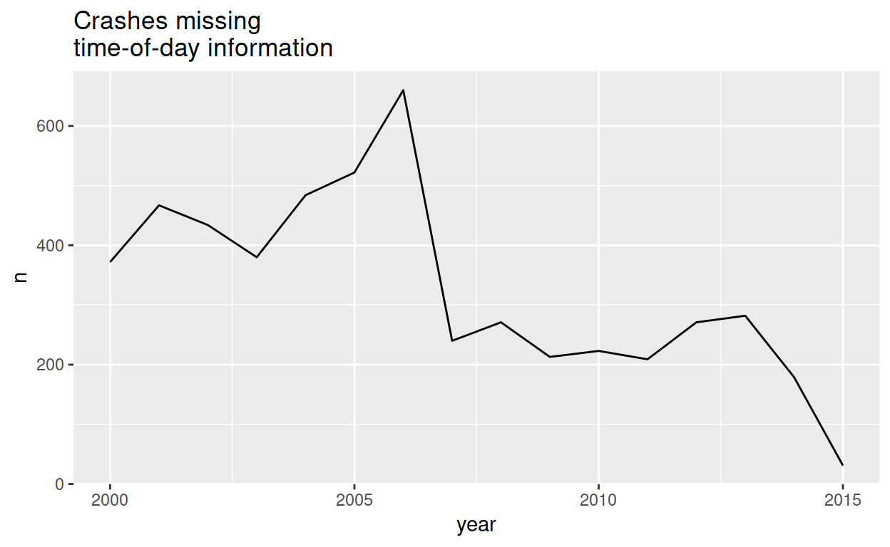
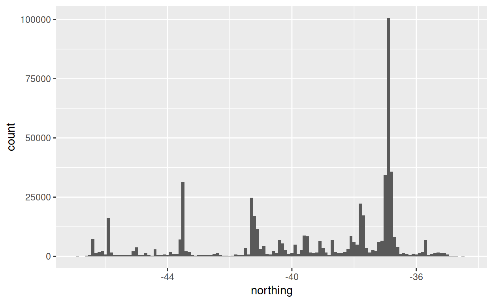

The nzcrash package redistributes crash statistics already available from the New Zealand Transport Agency, but in a more convenient form. Edit: The data is no longer available from the NZTA.
It’s a large package (over 20 megabytes, compressed).
Datasets
The crashes dataset describes most facts about a crash. The datasets causes, vehicles, and objects_struck describe facts that are in a many-to-one relationship with crashes. They can be joined to the crashes dataset by the common id column. The causes dataset can additionally be joined to the vehicles dataset by the combination of the id and vehicle_id columns. This is most useful when the resulting table is also joined to the crashes dataset.
Up-to-date-ness
The data was last scraped from the NZTA website on 2015-07-20. At that time, the NZTA had published data up to the 2015-03-10.
## Observations: 540,888
## Variables: 32
## $ region <chr> "Ashburton District", "Ashburton Di…
## $ road <chr> "ACTON ROAD", "ACTON ROAD", "ACTON …
## $ distance_from_landmark <int> 470, 1200, 400, 200, NA, 10, NA, NA…
## $ direction_from_landmark <fct> East, North, North, South, NA, West…
## $ landmark <fct> NA, NA, NA, NA, Intersection, NA, I…
## $ side_road <chr> "GARDINERS ROAD", "GARDINERS ROAD",…
## $ id <int> 2072528, 2021605, 2072021, 2073396,…
## $ date <dttm> 2000-07-30, 2000-04-30, 2000-06-10…
## $ time <dttm> 1970-01-01 12:30:00, 1970-01-01 21…
## $ direction <fct> West, East, North, North, South, Ea…
## $ street <fct> First, First, First, First, First, …
## $ curvature <fct> Medium, Easy, Straight, Straight, M…
## $ wetness <fct> Dry, Dry, Dry, Dry, Dry, Dry, Dry, …
## $ light_ambient <fct> Bright sun, Dark, Dark, Dark, Dark,…
## $ light_artificial <fct> NA, No street lights present, No st…
## $ weather_1 <fct> Fine, Mist/fog, Fine, Fine, Fine, F…
## $ weather_2 <fct> NA, NA, NA, NA, NA, NA, NA, NA, NA,…
## $ junction_type <fct> NA, NA, NA, NA, T junction, Crossro…
## $ traffic_control <fct> NA, NA, NA, NA, Give way sign, Give…
## $ road_marking <fct> centre line, centre line, Nil, Nil,…
## $ speed_limit <fct> 100, 100, 100, 100, 100, 50, 50, 10…
## $ fatalities <int> 0, 0, 0, 0, 0, 0, 0, 0, 0, 0, 0, 0,…
## $ severe_injuries <int> 0, 0, 0, 0, 0, 0, 0, 0, 1, 0, 1, 0,…
## $ minor_injuries <int> 0, 1, 0, 0, 0, 0, 0, 0, 0, 0, 0, 0,…
## $ pedestrian_age <int> NA, NA, NA, NA, NA, NA, NA, NA, NA,…
## $ cyclist_age <int> NA, NA, NA, NA, NA, NA, NA, NA, NA,…
## $ datetime <dttm> 2000-07-30 12:30:00, 2000-04-30 21…
## $ easting <dbl> 172.0798, 172.0732, 172.0485, 171.4…
## $ northing <dbl> -43.80684, -43.79263, -43.76965, -4…
## $ movement_category <fct> Cornering, Cornering, Collision wit…
## $ movement_description <fct> Lost control turning right, Lost co…
## $ severity <fct> non-injury, minor, non-injury, non-…
## Observations: 888,072
## Variables: 7
## $ id <int> 2072528, 2021605, 2072021, 2073396, 20725…
## $ index <int> 1, 1, 1, 1, 1, 1, 1, 1, 1, 1, 1, 1, 1, 1,…
## $ code <int> 103, 102, 195, 380, 101, 371, 103, 130, 1…
## $ vehicle_id <chr> "a", "a", "a", "a", "a", "a", "b", "a", "…
## $ cause <fct> "Alcohol test above limit or test refused…
## $ cause_category <fct> Driver control, Driver control, Driver co…
## $ cause_subcategory <fct> "Alcohol or drugs", "Alcohol or drugs", "…
## Observations: 979,930
## Variables: 3
## $ id <int> 2000001, 2000002, 2000002, 2000003, 2000003, 200…
## $ vehicle_id <chr> "a", "a", "b", "a", "b", "a", "b", "a", "b", "a"…
## $ vehicle <fct> "Car", "Car", "Van, ute", "Car", "Car", "Car", "…
## Observations: 261,276
## Variables: 3
## $ id <int> 2000001, 2000009, 2000012, 2000012, 2000014, 2…
## $ object_order <int> 1, 1, 1, 2, 1, 2, 3, 1, 1, 1, 1, 2, 1, 2, 1, 1…
## $ object <fct> "Utility pole, includes lighting columns", "Up…Accuracy
The NZTA, doesn’t agree with itself about recent annual road tolls, and this dataset gives a third opinion.
## # A tibble: 16 x 2
## year fatalities
## <dbl> <int>
## 1 2000 462
## 2 2001 455
## 3 2002 405
## 4 2003 461
## 5 2004 435
## 6 2005 405
## 7 2006 393
## 8 2007 421
## 9 2008 366
## 10 2009 384
## 11 2010 375
## 12 2011 284
## 13 2012 308
## 14 2013 256
## 15 2014 279
## 16 2015 34Severity
Crashes categorised as “fatal”, “serious”, “minor” or “non-injury”, based on the casualties. If there are any fatalities, then the crash is a “fatal” crash, otherwise if there are any ‘severe’ injuries, the crash is a “serious” crash.
The definition of a ‘severe’ injury is not clear.
Minor and non-injury crashes are likely to be under-recorded since they often do not involve the police, who write most of the crash reports upon which these datasets are based.
A common mistake is to confuse the number of fatal crashes with the number of fatalities.
## [1] 5042
## [1] 5723Dates and times
Three columns of the crashes dataset describe the date and time of the crash in the NZST time zone (Pacific/Auckland).
dategives the date without the timetimegives the time where this is available, and NA otherwise. Times are stored as date-times on the first of January, 1970.datetimegives the date and time in one value when both are available, and NA otherwise.dateis always available, howevertimeis not.
When aggregating by some function of the date, e.g. by year, then always start from the date column unless you also need the time. This ensures against accidentally discounting crashes where a time is not recorded.

Location coordinates
99.9% of crashes have coordinates. These have been converted from the NZTM projection to the WGS84 projection for convenience with packages like ggmap.
Because New Zealand is tall and skinny, you can easily spot the main population centres with a simple boxplot.

Vehicles
There can be many vehicles in one crash, so vehicles are recorded in a separate vehicles dataset that can be joined to crashes by the common id column.
## # A tibble: 16 x 2
## vehicle n
## <fct> <int>
## 1 Car 728119
## 2 Van, ute 87927
## 3 SUV or 4x4 vehicle 48269
## 4 Truck 44305
## 5 Motorcycle 17733
## 6 Pedestrian 16622
## 7 Bicycle 15713
## 8 Bus 8066
## 9 Taxi or taxi van 6792
## 10 Moped 3594
## 11 Other or unknown 2043
## 12 School bus 373
## 13 Skateboard, in-line skater, etc. 284
## 14 Wheeled pedestrian (wheelchairs, etc.) 66
## 15 Equestrian 22
## 16 <NA> 2Objects struck
There can be many objects struck in one crash, so these are recorded in a separate objects_struck dataset that can be joined to crashes by the common id column.
Q: What are more fatal, trees or lamp posts?
## # A tibble: 2 x 4
## # Groups: object [2]
## object fatal serious minor
## <fct> <dbl> <dbl> <dbl>
## 1 Utility pole, includes lighting columns 0.0443 0.215 0.741
## 2 Trees, shrubbery of a substantial nature 0.0674 0.246 0.687A: Trees (Don’t worry, I know it’s harder than that.)
Causes
Causes can be joined either to the crashes dataset (by the common id column), or to the vehicles dataset (by both of the commont id and vehicle_id) columns.
The main cause groups are given in the causes_category column.

That’s odd – where are speed, alcohol, and restraints? They’re given in cause_subcategory.
## # A tibble: 8 x 2
## cause n
## <fct> <int>
## 1 Cornering 37861
## 2 On straight 10196
## 3 <NA> 7119
## 4 To give way at intersection 1658
## 5 At temporary speed limit 1010
## 6 At crash or emergency 55
## 7 Approaching railway crossing 44
## 8 When passing stationary school bus 37There’s nothing there about speed limit violations, because it’s impossible to tell what speed a vehicle was going at when it crashed.
More worryingly, how is “Alcohol test below limit” a cause for a crash? Hopefully they filter those out when making policy decisions.

This time, join causes to both vehicles and crashes to assess the drunken cyclist menace.
## # A tibble: 55 x 2
## cause n
## <fct> <int>
## 1 Behind when changing lanes position or direction (includes U… 26
## 2 <NA> 20
## 3 When required to give way to traffic from another direction 10
## 4 Wandering or wobbling 8
## 5 At Give Way sign 4
## 6 Cyclist or M/cyclist wearing dark clothing 4
## 7 Driving or riding on footpath 4
## 8 On left without due care 4
## 9 When pulling out or moving to the right 4
## 10 At steady red light 3
## # … with 45 more rowsI think we all know what “Wandering or wobbling” means.
Check out the package on Github at https://github.com/nacnudus/nzcrash.